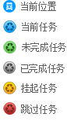

<div class="wrap">
  <div class="top-bar">
    <div nz-row nzGutter="16">
      <div nz-col class="gutter-row" nzSpan="10">
        <!-- 面包屑导航 -->
        <app-breadcrumbs [options]="breadcrumbs"></app-breadcrumbs>
      </div>
      <div nz-col class="gutter-row " nzSpan="8" nzOffset="6">
        <div class="table-CUDE">
          <label
            *ngIf="isShowSideBarLabel"
            nz-checkbox
            [(ngModel)]="isShowSideBar"
            (ngModelChange)="onToggleSideBar($event)"
          >
            <strong>侧边栏</strong>
          </label>
          &nbsp;
          <!--<label nz-checkbox [(ngModel)]="isShowCity" (ngModelChange)="onToggleCity($event)">
                        <strong>漳州市</strong>
                    </label>
                    &nbsp;-->
          <!--<label nz-checkbox [(ngModel)]="isShowGasStation" (ngModelChange)="onToggleGasStation($event)">
                        <strong>加油站</strong>
                    </label>
                    &nbsp;-->
          <span
            class="question-icon"
            nz-popover
            [nzContent]="tips"
            nzPlacement="bottomRight"
          >
            <i nz-icon type="question-circle" theme="fill"></i>
            <ng-template #tips>
              
            </ng-template>
          </span>
          &nbsp;
        </div>
      </div>
    </div>
  </div>
  <!-- 侧边栏与地图 -->
  <div nz-row>
    <div class="side-bar" nz-col nzSpan="6" *ngIf="isShowSideBar">
      <div class="tables-cell" nz-row>
        <!-- 线路表格 -->
        <div class="table-route" nz-col nzSpan="24">
          <nz-table
            #routeTable
            [nzData]="routeListCache"
            [nzScroll]="{ y: tableScrollY }"
            [nzLoading]="false"
            [nzFrontPagination]="true"
            [nzShowPagination]="false"
          >
            <thead>
              <tr>
                <th nzWidth="5%"></th>
                <th nzWidth="35%">路线</th>
                <th nzWidth="35%">车辆</th>
                <th nzWidth="25%">司机</th>
              </tr>
            </thead>
            <tbody>
              <tr
                *ngFor="let item of routeListCache; index as i"
                [ngClass]="{ 'table-row-selected': item.checked }"
                (click)="onSelectRoute($event, item)"
              >
                <td>{{ i + 1 }}</td>
                <td>{{ item.name }}</td>
                <td>{{ item.vehicle.plateNumber }}</td>
                <td>{{ item.driver }}</td>
              </tr>
            </tbody>
          </nz-table>
        </div>
        <!-- 任务表格 -->
        <div
          class="table-task"
          nz-col
          nzSpan="24"
          *ngIf="isShowTaskTable && taskListCache && taskListCache.length > 0"
        >
          <nz-table
            #taskTable
            [nzData]="taskListCache"
            [nzScroll]="{ y: tableScrollY }"
            [nzShowPagination]="false"
          >
            <thead>
              <tr>
                <th nzWidth="5%"></th>
                <th nzWidth="55%">收运单位</th>
                <th nzWidth="40%" class="amount-of-garbage">手持报量(吨)</th>
              </tr>
            </thead>
            <tbody>
              <ng-template
                ngFor
                let-item
                let-i="index"
                [ngForOf]="taskListCache"
              >
                <tr (click)="onClickTask($event, item)">
                  <td
                    [nzShowExpand]="item.taskList && item.taskList.length > 0"
                    [(nzExpand)]="item.expand"
                    (nzExpandChange)="onCollapseTask(item, $event)"
                    (click)="onStopPro($event)"
                  ></td>
                  <td>
                    <nz-tag [nzColor]="convertTaskStateToColor(item.state)">{{
                      i + 1
                    }}</nz-tag>
                    <span class="tag-text" [title]="item.name">{{
                      item.name
                    }}</span>
                  </td>
                  <td class="amount-of-garbage">
                    {{ item.amountOfGarbage }}
                  </td>
                </tr>
                <ng-template
                  *ngIf="item.expand"
                  ngFor
                  let-child
                  [ngForOf]="item.taskList"
                >
                  <tr (click)="onClickTask($event, child)">
                    <td></td>
                    <td>
                      <nz-badge
                        nzDot
                        [nzStyle]="{
                          top: '-8px',
                          marginRight: '5px',
                          marginLeft: '5px',
                          backgroundColor: convertTaskStateToColor(child.state)
                        }"
                        >&nbsp;</nz-badge
                      >
                      <span class="tag-text" [title]="child.name">{{
                        child.name
                      }}</span>
                    </td>
                    <td class="amount-of-garbage">
                      {{ child.amountOfGarbage }}
                    </td>
                  </tr>
                </ng-template>
              </ng-template>
            </tbody>
          </nz-table>
        </div>
      </div>
    </div>
    <div class="map-cell" nz-col nzSpan="{{ isShowSideBar ? 18 : 24 }}">
      <div id="map"></div>
    </div>
  </div>
</div>
